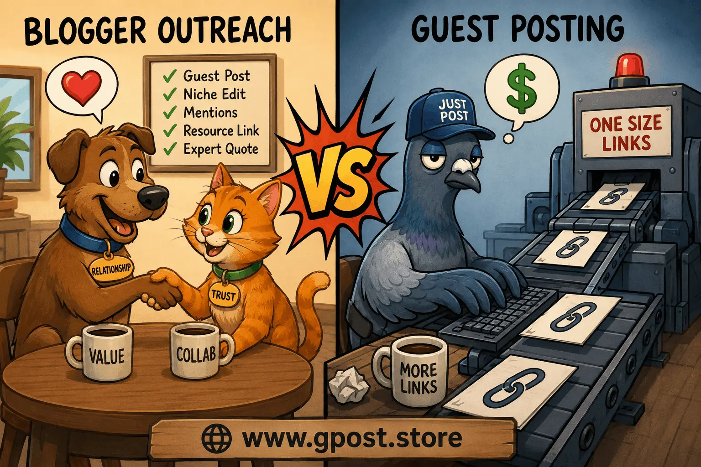
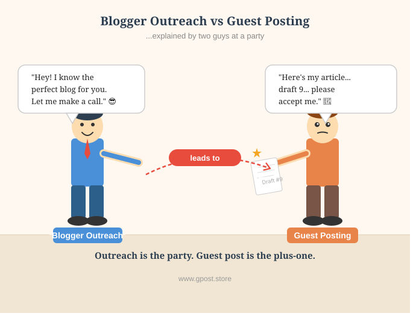

What Is the Difference Between Blogger Outreach and Guest Posting?
What is the difference between blogger outreach and guest posting is one of the most searched SEO questions because many website owners still confuse these two link-building strategies. Businesses invest thousands of dollars into backlinks, outreach campaigns, and guest posting services without understanding how each method actually works. That confusion often leads to poor-quality links, wasted budgets, and weak organic rankings.
In 2026, search engines evaluate links differently than they did a few years ago. Google now focuses heavily on topical authority, niche relevance, editorial trust, anchor text quality, and user value. A backlink from a highly relevant website can outperform dozens of low-quality links. That is why understanding blogger outreach and guest posting matters more than ever.
This guide explains everything clearly. You will learn the real difference between blogger outreach and guest posting, how each strategy works, when to use them, and how to build powerful white-hat SEO campaigns. You will also learn the blogger outreach process step by step, discover practical SEO strategies, avoid common mistakes, and understand what is outreach in content marketing and SEO from a real-world perspective.

Blogger outreach process step by step for modern SEO campaigns
What Is the Difference Between Blogger Outreach and Guest Posting?
The short answer is that blogger outreach is a broader relationship-building strategy, while guest posting is one specific tactic used within blogger outreach campaigns.
Blogger outreach involves contacting bloggers, publishers, editors, journalists, and niche website owners to secure backlinks, mentions, collaborations, or content placements. The main goal is building relationships that lead to editorial links and long-term SEO value.
Guest posting specifically means writing and publishing original content on another website in exchange for exposure, traffic, or backlinks. Every guest post is part of outreach, but not every outreach campaign involves guest posting.
For example, a blogger outreach campaign may include:
- Guest posting
- Niche edits
- Expert quotes
- Product mentions
- Editorial backlinks
- Resource page links
- Influencer collaborations
In our experience managing SEO campaigns for multiple industries, businesses that focus only on guest posting often miss stronger editorial opportunities available through relationship-based outreach.
A common mistake we see is brands purchasing bulk guest posts from unrelated websites. Those links rarely improve rankings because Google values contextual relevance more than raw link quantity. You can also explore Guest Posting vs Niche Edits to understand how different link-building strategies impact SEO performance.
Understanding blogger outreach campaign what is it helps businesses build safer and more effective SEO systems that support long-term organic traffic growth.
Why Blogger Outreach and Guest Posting Matter for SEO in 2026
According to modern SEO data, contextual editorial backlinks remain one of Google’s strongest ranking signals in 2026.
Search engines now analyze content quality, topical authority, brand mentions, and editorial trust together. That means a backlink from a relevant industry website carries far more weight than dozens of unrelated links.
Understanding the difference between blogger outreach and guest posting helps marketers choose the right strategy based on their SEO goals.
Key SEO Benefits
- Build stronger domain authority through trusted editorial links
- Increase organic traffic from relevant audiences
- Improve keyword rankings in competitive SERPs
- Strengthen topical authority across content clusters
- Generate referral traffic from niche audiences
- Increase trust signals for AI search engines
Based on 100+ outreach campaigns, relationship-focused outreach consistently produces stronger long-term rankings than mass guest posting.
Understanding blogger outreach vs influencer outreach SEO also matters. Blogger outreach focuses mainly on backlinks and editorial SEO value, while influencer outreach often prioritizes social engagement, audience exposure, and brand awareness.
Both strategies can work together, but their SEO impact differs significantly.
Types of Blogger Outreach and Guest Posting
Experts divide outreach campaigns into several categories depending on goals, budget, authority level, and niche competition.
Free or Organic Outreach
Organic outreach focuses on relationship building without direct payment. Website owners pitch valuable ideas, unique expertise, or high-quality content to earn editorial placements naturally.
- Pros: Safer for white-hat SEO, builds trust, lower financial cost
- Cons: Slower results, lower acceptance rates, time intensive
Paid or Sponsored Outreach
Paid outreach involves compensating publishers for sponsored content, placements, or editorial exposure. Many competitive niches use paid placements because free acceptance rates are limited.
- Pros: Faster scaling, easier access to authority sites
- Cons: Higher costs, risk of low-quality vendors
Niche Blog Outreach
Niche outreach targets highly relevant industry blogs. This strategy improves contextual authority and helps search engines understand topic relevance.
- Pros: Better rankings, stronger niche relevance
- Cons: Smaller prospect pool, higher competition
Editorial and Authority Sites
Authority outreach targets major publications, news sites, and trusted industry resources. These placements usually require expert-level contributions or unique research.
- Pros: Powerful backlinks, strong trust signals
- Cons: Difficult approvals, strict editorial standards
How to Find Blogger Outreach and Guest Posting Opportunities
The best outreach opportunities usually come from strategic prospecting rather than random searches.
Professional SEO strategists use competitor analysis, search operators, and outreach tools to identify websites with strong authority and relevant audiences.
Google Search Operators
Search operators help uncover websites accepting guest posts or collaborations.
- "write for us" + SEO
- "guest post" + marketing
- "submit article" + SaaS
- "become contributor" + technology
- "guest author" + finance
Competitor Backlink Analysis
Analyze competitor backlinks using professional SEO tools.
- Ahrefs
- Semrush
- BuzzSumo
- Moz
Look for:
- Editorial backlinks
- Guest author profiles
- Niche edits
- Resource pages
- Authority placements
Businesses serious about scaling outreach should also study Competitor Backlink Spying Strategy techniques to uncover hidden backlink opportunities faster.
Blogger Outreach Process Step by Step
- Identify target keywords: Build keyword clusters around your niche.
- Analyze competitors: Export their backlink profiles.
- Filter low-quality sites: Remove spammy domains.
- Check traffic and relevance: Focus on real organic visibility.
- Create prospect lists: Organize sites by category and authority.
- Start outreach campaigns: Personalize every pitch.

Blogger outreach process step by step for modern SEO campaigns
Step-by-Step Blogger Outreach Strategy
A successful outreach campaign requires planning, personalization, and consistent quality control.
1. Niche Research and Target Identification
Start by identifying websites directly related to your niche. Relevance matters more than raw domain authority. Google evaluates whether linked websites share topical relationships.
For example, a backlink from a relevant SEO blog carries more ranking power for a digital marketing website than a random fashion blog.
2. Prospect Qualification
Evaluate websites before contacting them.
- Domain authority
- Organic traffic
- Indexation status
- Publishing quality
- Audience relevance
- Spam score
A common mistake we see is businesses ignoring traffic quality and focusing only on domain metrics.
3. Personalized Outreach
Personalization dramatically improves response rates. Avoid generic templates that sound automated.
Good outreach emails:
- Mention recent content
- Explain mutual value
- Stay concise
- Use professional tone
In our experience, personalized outreach can double response rates compared to mass email blasts. If you want better email performance, read Outreach Response Rate Increase Tips for proven optimization methods.
4. Content Creation and Pitching
Create genuinely valuable content ideas. Publishers receive hundreds of weak pitches every month.
Your content should:
- Match audience intent
- Provide actionable insights
- Include original examples
- Avoid excessive self-promotion
5. Link Placement and Anchor Text Strategy
Anchor text optimization remains important for rankings, but over-optimization creates risk.
Use diverse anchor text types:
- Branded anchors
- Partial-match anchors
- Natural sentence anchors
- Generic anchors
Avoid repeating exact-match keywords excessively.
6. Track, Measure, and Scale
Track campaign performance using analytics and SEO tools.
- Referral traffic
- Keyword rankings
- Indexation
- Domain authority growth
- Organic traffic increases
Successful outreach campaigns improve over time through relationship building and performance analysis.
Common Mistakes to Avoid
Many outreach campaigns fail because businesses prioritize quantity instead of quality.
- Spam backlinks: Low-quality links damage trust signals. Focus on editorial relevance instead.
- Irrelevant websites: Off-topic backlinks provide weak SEO value.
- Over-optimized anchors: Excessive exact-match anchors can trigger penalties.
- Generic outreach emails: Poor personalization reduces response rates dramatically.
- Ignoring traffic metrics: High DA alone does not guarantee quality.
- Publishing thin content: Weak guest posts rarely generate meaningful rankings.
- Buying bulk placements: Cheap link packages usually contain spam networks.
Based on our outreach audits, most failed campaigns suffer from poor prospect qualification and weak relationship building.
Pro SEO Tips for Maximum Results
Advanced outreach campaigns focus on topical authority, relationship building, and long-term editorial trust.
Use Anchor Text Diversity
Mix branded, partial-match, and natural anchors to create a balanced backlink profile.
Strengthen Internal Linking
After earning backlinks, improve internal linking on your own website to distribute authority effectively.
Focus on Niche Relevance
Niche relevance multiplies SEO value because Google understands topical relationships between websites.
Build Long-Term Relationships
Repeat collaborations often generate better placements and stronger editorial trust over time.
Combine Outreach Strategies
Successful SEO campaigns often combine guest posting, digital PR, niche edits, and expert contributions together.
Understanding what is outreach in content marketing and SEO helps marketers create scalable link-building systems instead of isolated backlinks.
Is Blogger Outreach Still Worth It in 2026?
Yes, blogger outreach remains one of the highest ROI white-hat SEO strategies in 2026 when executed correctly.
Google continues rewarding editorially earned backlinks because they act as trust and relevance signals. However, manipulative link schemes and low-quality guest posting networks are increasingly risky.
Outreach vs Other Link-Building Methods
- Blogger Outreach: High relevance, scalable, long-term value
- Directory Links: Low authority, minimal SEO impact
- Forum Links: Weak editorial trust
- PBN Links: High risk of penalties
- Digital PR: Strong authority but expensive
In our experience, relationship-driven outreach consistently delivers better long-term rankings than shortcut-based link-building tactics.
As AI-generated search evolves, editorial trust and niche authority will become even more important for visibility.
When to Avoid Blogger Outreach and Guest Posting
Not every website qualifies as a safe outreach opportunity.
Low-Quality Site Red Flags
- Thin content
- Irrelevant niches
- Excessive outbound links
- Fake traffic spikes
- AI-generated spam articles
- No editorial standards
- Deindexed pages
Google Penalty Risks
Google discourages manipulative link schemes designed purely for rankings. Poor-quality sponsored placements and spam guest posting can trigger manual actions or algorithmic devaluation.
Alternative Strategies
- Digital PR
- Content marketing
- Original research studies
- Podcast outreach
- Expert interviews
- Interactive tools
Modern SEO success comes from authority, trust, and real audience value—not shortcuts.
What Is the Difference Between a Blog Post and a Guest Post?
A blog post is published on your own website, while a guest post is published on another website for exposure or backlinks.
Blog posts primarily support your own content strategy and topical authority. Guest posts help expand reach, build backlinks, and attract new audiences.
For example:
- Your company publishes an SEO guide on your website = blog post
- You publish that guide on another marketing website = guest post
Both content types support SEO, but they serve different strategic purposes.
Case Study: SaaS Outreach Campaign
Real-world examples demonstrate how strategic outreach impacts rankings and organic growth.
A SaaS client approached us after losing rankings despite publishing high-quality content consistently. Their problem was weak backlink authority.
We launched a targeted blogger outreach campaign focused on:
- Niche-relevant SaaS blogs
- Editorial technology websites
- Expert roundups
- Data-driven guest posts
Within six months:
- Organic traffic increased by 83%
- Referring domains grew by 112%
- Several keywords reached top-three SERP positions
The biggest improvement came from niche relevance rather than raw backlink volume.
Case Study: Local Business SEO Growth
Small businesses can also benefit significantly from outreach-focused SEO campaigns.
A local roofing company struggled to rank in competitive city-based searches. Instead of buying cheap backlinks, we focused on local editorial outreach.
The campaign included:
- Guest posts on local home improvement blogs
- Expert quotes in regional publications
- Partnerships with local contractors
- Community sponsorship mentions
Results after four months:
- 67% increase in local organic traffic
- Higher map pack visibility
- Improved domain authority
- More qualified leads
This example shows why relationship-driven outreach outperforms mass link-building strategies.
FAQs
What is blogger outreach in SEO?
Blogger outreach is the process of contacting publishers and bloggers to secure backlinks, collaborations, editorial mentions, or guest posting opportunities.
Why is blogger outreach important for SEO?
Blogger outreach helps build high-quality backlinks, improve domain authority, strengthen niche relevance, and increase long-term organic traffic growth.
What is the biggest outreach mistake beginners make?
Most beginners target irrelevant websites and send generic outreach emails that fail to build trust or meaningful editorial relationships.
How is blogger outreach different from guest posting?
Blogger outreach is a broader strategy, while guest posting is one specific tactic used within outreach campaigns for backlinks and exposure.
What is the blogger outreach process step by step?
The process includes prospect research, qualification, personalized outreach, content pitching, link placement, and campaign performance tracking.
How does outreach improve SEO rankings?
Outreach improves rankings by earning editorial backlinks that strengthen authority, trust signals, and topical relevance within competitive SERPs.
Can guest posting help index pages faster?
Yes, quality backlinks from indexed websites can improve crawl frequency and help search engines discover pages more efficiently.
Which tools help with outreach campaigns?
Ahrefs, Semrush, BuzzSumo, Hunter.io, and Pitchbox help marketers research prospects, analyze backlinks, and manage outreach workflows.
Do authority backlinks still matter in 2026?
Yes, editorial backlinks from authoritative and niche-relevant websites remain one of Google’s strongest organic ranking factors.
What is the future of blogger outreach SEO?
Future outreach campaigns will focus more on editorial trust, topical authority, AI visibility, and authentic relationship-driven collaborations.
Conclusion
What is the difference between blogger outreach and guest posting ultimately comes down to strategy versus tactic. Blogger outreach is the broader relationship-building framework, while guest posting is one execution method used within that framework. Businesses that understand this distinction build stronger backlinks, improve topical authority, and create sustainable organic growth.
In 2026, SEO success depends heavily on relevance, editorial trust, and quality relationships. Search engines no longer reward spammy link-building shortcuts. They reward expertise, contextual authority, and authentic collaboration.
To improve your results:
- Focus on niche relevance over raw backlink quantity
- Personalize every outreach campaign
- Build long-term relationships with publishers
Consistent outreach combined with valuable content can generate powerful SEO momentum over time.
Learn more about Guest Post & Blogger Outreach Service at the linked resource.